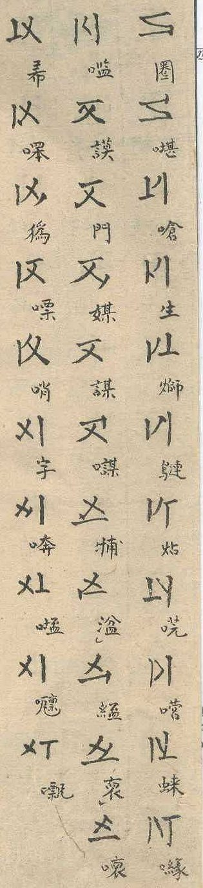
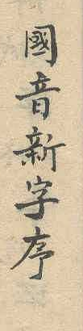
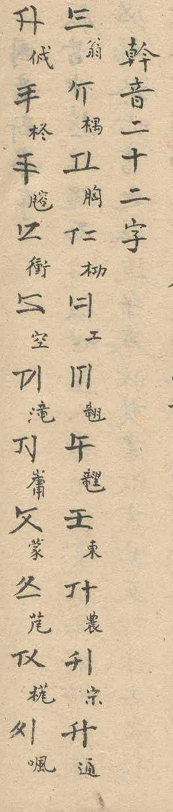
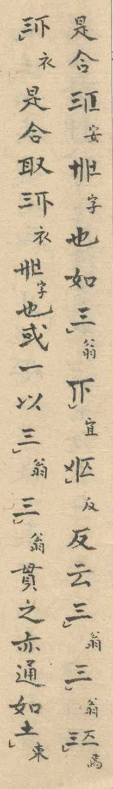
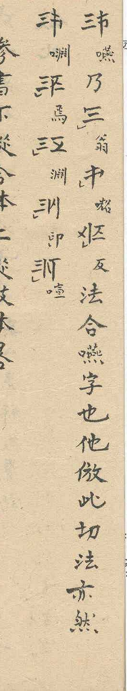
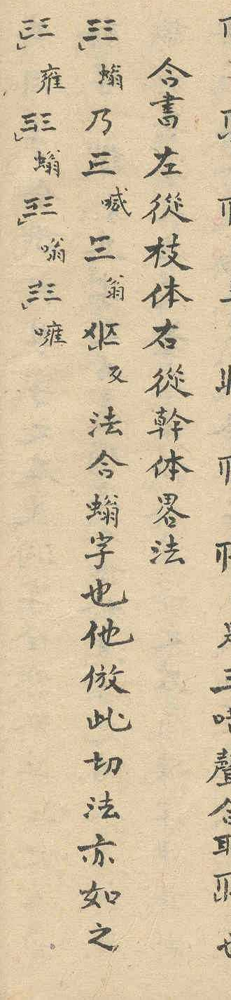
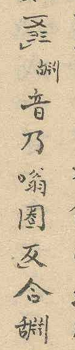
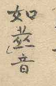
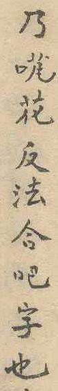
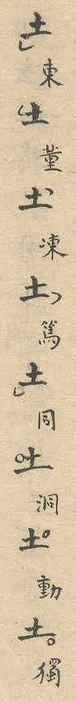

Oct 29, 2026 · Nguyễn Quốc Trung
This proposal encodes Quốc Âm Tân Tự (QATT), a Vietnamese script used inside Hán Nôm texts, as 164 characters in the Supplementary Multilingual Plane.
| Item | Entry |
|---|---|
| Script | Quốc Âm Tân Tự (國音新字, QATT) |
| Proposer | Nguyễn Quốc Trung, independent researcher |
| Version | Alpha 1 |
| Draft date | 2026-10-29 |
| Characters | 164: 154 components, 2 joiners, 8 tone marks. The Tham Thư combiner can be decided separately (5.1) |
| Model | Atomic components, left before right and lower before upper, with every combination written with an explicit joiner |
| Plane | Supplementary Multilingual Plane, block position to be assigned by the UTC |
| Direction | Follows Hán Nôm (the source is vertical) |
| Attested sources | Two manuscripts of one text, Institute of Hán Nôm Studies, Hanoi, AB.630. Not older than the reign of Thiệu Trị (1841–1847) |
Quốc Âm Tân Tự (國音新字, "new script for the sounds of the national language") is a Vietnamese script built from 22 bases, each drawn with three strokes. A base exists in seven forms: one without a marking stroke and six with a short marking stroke at one of the six stroke ends. Every form can stand alone. All but one per base combine in groups of two or three, and any character may carry a tone mark in one of its corners.
The script is known from one text, preserved in two manuscripts at the Institute of Hán Nôm Studies in Hanoi (3.1). The text names the script in the heading of its preface, 國音新字序, "preface to the new script for the sounds of the national language" (p. 1). The text is undated. It is not older than the reign of Emperor Thiệu Trị (1841–1847), because the character 華 lacks its final stroke, a naming taboo for the emperor's mother, Hồ Thị Hoa (p. 1). The taboo gives the earliest date only. The author signs as 南城居士阮子 (Nam Thành cư sĩ Nguyễn Tử), a lay scholar (cư sĩ) surnamed Nguyễn from Nam Thành, at the end of the preface (p. 2). He made the script, he says, for his own private notes. The preface explains the idea behind it:
窃想書契之造，必有一箇簡易之格，而人物聲音靡有遺者。
I humbly think that when writing was first made, there must have been one simple rule, by which no sound of men or things was left out.
In the source the script appears within Hán Nôm text and is treated exactly like Hán Nôm characters. The source contains no running text written in the script: it gives single characters as examples and spelling formulas in the phản thiết manner (4.1). Three-component characters (Tham Thư) are attested in two examples. The source describes how their sounds are articulated but gives them no reading (4.3). Eight tones are marked with circles and semicircles in the corners, following the Chinese yin-yang method.
A description of the script was published by Nguyễn Quang Hồng in 1986 (Appendix C). This proposal is based on the source itself.
The script is attested in one text, in two manuscripts (3.1). Digital text in the script cannot be exchanged today: no character of the script exists in Unicode, so it can be written only with characters of another script or as images. The proposer has built a font for the script, an editor and a conversion between the script and Quốc Ngữ. These use code points of the Supplementary Private Use Area-A (U+F0000..U+F00AF), laid out as proposed here. Text written with them is readable only with this font and these tools. Private-use code points have no assigned properties, so search, sorting, line breaking and segmentation of such text depend on each application, and text in different private-use assignments cannot be combined.
Encoding the script lets the text of the source be transcribed, quoted and searched in a standard form, and lets the script be used next to Hán Nôm and Quốc Ngữ in one document, as it appears in the source (2.1). The model of the proposal (5) is built so that every character of the source can be written, including the Tham Thư attested in the source (4.3).
The script is in use on the web today (3.3). [TBD: scholarship]
Two sources attest the script. Both are manuscripts of the same vertical Hán Nôm text, which describes the methods of combination. Each has four double pages, numbered as eight pages, with the same content and the same page numbering. Both are bound in one volume with continuous folio numbers, Source 1 on folios 3–10 and Source 2 on folios 11–18. Page references in this proposal give the page within each manuscript, 1 to 8. Whether Source 2 was copied from Source 1 or both from an earlier original cannot be determined. The two sources are one text in two witnesses. Page references in this proposal, such as (p. 2), refer to Source 1. Since both witnesses share the page numbering and the layout of the columns, they apply to Source 2 as well. Source 2 is named only where it differs or where its reading matters. The figures are cut-outs of Source 1 (Figure 1).

| Source | Date | Location | Text type | Direction |
|---|---|---|---|---|
| Source 1 | Thiệu Trị (1841–1847) or later | Institute of Hán Nôm Studies, Hanoi, AB.630 | Manuscript, Hán Nôm, 4 double pages | Vertical |
| Source 2 | Thiệu Trị (1841–1847) or later | Institute of Hán Nôm Studies, Hanoi, AB.630 | Manuscript, Hán Nôm, 4 double pages | Vertical |
Both manuscripts share the shelfmark AB.630 (or AB.636 [TBD]). The date is that of the text, from the naming taboo (2.1). The dates of the two copies are not known.
Appendix B lists the passages by page.
| Feature | Evidence |
|---|---|
| Marked Cán | The 22 marked Cán are listed with the names of their sounds in the section 幹音二十二字 (p. 2) |
| Unmarked Cán | Not listed. Shown in the combined characters of the examples and standing alone, for example with the eight tones (pp. 5–7) |
| Chi | Tabulated in the section 枝字一百一十字 in blocks of five per base: 109 forms shown against 110 named (pp. 3–4) |
| Phản thiết pairs | Described in the section 反切諧音法, from p. 5. Components of different bases, unmarked Cán first. The unmarked Cán gives the initial, the Chi the rhyme. Pairs within the explanatory text (p. 6) |
| Hợp Thư | Described in the text. Every example is a same-base pair with the Chi first. The formula of the worked example names the Chi first and gives the rhyme with the Cán. The count of 880 (110 × 8 tones) covers only same-base pairs (p. 8) |
| Tham Thư | Rule described in the text (參書下從合体上從枝体), its lower part read as a Hợp Thư. Two examples attested, both on a Hợp Thư. The formula of a Tham Thư names the lower component first (p. 7). The articulation of each example is described, but no reading is given |
| Standalone and adjacent components | When the text explains how components combine, it writes components on their own and side by side without combining them: a standalone unmarked Cán before a Chi, and two standalone unmarked Cán before a phản thiết pair (p. 6) |
| Tone marks | Eight tones in four corners, explained with the corner of each tone class and illustrated on one character (pp. 4–5). The neutral tone marked with a semicircle lower left. Characters with and without a tone mark in one passage. Round and angular forms of the same mark (p. 6) |
| Writing direction | The text is silent. Both witnesses are vertical Hán Nôm |
The script is in use on the web today: a website of the proposer (qatt.org), a page on Omniglot, a forum on Reddit with handwritten examples, a Facebook group whose members write tutorials and develop fonts, a video introduction on YouTube with more than 12,000 views in October 2026, a web converter from Quốc Ngữ, and posts and discussions on social media (web sources in Appendix C and).
Quốc Âm Tân Tự is built from 22 bases, each in seven forms. Every form can stand alone. All but one per base combine in groups of two or three, and any character may carry one tone mark in one of its four corners.
The preface derives this from the Book of Changes, in which a few signs grow by combination into a great number:
嘗考之三易卦，始於兩，次於四，成於八，重之爲六十四，変之爲四千九十六。
I once studied the trigrams of the three Changes: they begin with two, then four, and grow to eight; doubled they make sixty-four, varied they make four thousand and ninety-six.

The script has 22 bases (Cán, 幹, which the source writes with 音 in the heading 幹音二十二字 of the listing, p. 2, and with 字 in 二十二幹字為標, p. 7), each drawn with three strokes. The source lists the 22 base sounds (幹音二十二字, p. 2). Each is shown with a QATT character, which carries one short marking stroke at the start position, upper left or upper middle depending on the base, and with a Nôm annotation that gives its sound. This form is the marked Cán. The marking stroke always sits at the end of a stroke, so the three strokes offer six positions for it, counted counter-clockwise from the start position as 1 to 6. The marked Cán has it at position 1, and the five forms with the marking stroke at positions 2 to 6 are the Chi, in order. A seventh form has no marking stroke. The source calls both the marked and the unmarked form Cán: in the count section 幹 names the Cán standing alone (單幹書) as well as the component of a combination, which is always the unmarked form (幹体, p. 8). This proposal calls the form without marking stroke the unmarked Cán to tell the two apart, and uses base for the unit of seven forms. The unmarked form is attested for ONG, DONG, NGONG, TONG and PHONG (pp. 5–7). That all 22 bases have it follows from the counts of the source (4.2), not from a listing. Because the marking stroke of every Chi lies at another position than that of the marked Cán, no Chi coincides with the marked Cán: each base has six distinct marked forms and one unmarked form.
The Chi are tabulated in the section 枝字一百一十字, "the 110 Chi characters", in blocks of five per base (pp. 3–4). The table shows 109, one having been left out by oversight (KHONG WITH MARK-4). The source gives the readings of the Chi only through Nôm annotations next to each form. These are ambiguous or not attested in dictionaries, so the readings are not established. The encoding does not depend on them, because the forms differ by the position of the marking stroke. The annotations are not transcribed here.

The three classes have distinct functions. In a phản thiết pair an unmarked Cán gives the initial consonant of its base and a Chi gives a rhyme. Together the 110 Chi form the rhyme table of the script. In a Hợp Thư the formula of the source points to the reverse (4.2). A marked Cán stands for the whole syllable of its initial with the rhyme ông and names its base. It serves to pronounce the unmarked Cán in the phản thiết method. The unmarked Cán and the Chi also serve as the components of a Tham Thư (4.3). The worked examples of the source show these functions. Each explains a combined character with a formula in the fanqie form, the character, 乃, two spelling characters and 反, in which the first spelling character gives the initial and the second the rhyme: for a phản thiết pair on p. 7, for a Hợp Thư on p. 6.

Whether a component may stand alone in running text cannot be decided from the source, which contains no running text in the script (2.1). In these examples the marked Cán, the unmarked Cán and the Chi all appear standalone, also with tone marks, and where the text explains how components combine, it also writes them side by side without combining them: a standalone unmarked Cán before a Chi, and two standalone unmarked Cán before a Phản Thiết pair (p. 6). A standalone unmarked Cán has the same reading as the marked Cán of its base: the source illustrates the eight tones on the standalone unmarked Cán of đông (p. 5). Only the unmarked Cán and the Chi combine. The marked Cán never does. Outside the listing of the 22 Cán (p. 2) the marked Cán occurs only twice, both times as a separate character with a reading, in formulas that explain a combined character (p. 6, p. 7). The second carries a tone mark.
| Component | Count | Form | Example (ONG) | Standalone | In combination |
|---|---|---|---|---|---|
| Marked Cán | 22 | marking stroke at position 1 | | yes | never |
| Chi | 110 (22 × 5) | marking stroke at position 2 to 6 | | yes | yes |
| Unmarked Cán | 22 | no marking stroke | | yes, with the reading of the marked Cán | with a Chi |
An unmarked Cán and a Chi combine into one character. The source describes two methods.

[ONG J CHONG-MARK-5] , read yên (Figure 5).[ONG-MARK-2 J ONG] .
The section on p. 6 shows five Hợp Thư of ONG: the character explained by the formula and four further ones, which carry the marking stroke at positions 3 to 6 (ONG-MARK-3 to ONG-MARK-6 J ONG). In both sources the first of them is written with the marking stroke on neither component, [ONG J ONG] , although the formula spells it with the Chi ONG-MARK-2 (喊) and the marked Cán (翁). Two readings are possible. If it is a slip of the common original, the character is ONG-MARK-2 J ONG, the series runs through all five Chi of ONG, and the grammar of 5.3 stands. If it is meant as written, ONG-MARK-2 J ONG is not attested, and ONG J ONG, a pair of two unmarked Cán of one base, has to be supported. The encoding allows both: ONG J ONG can be written with the joiner and is segmented like any other pair (6.2), so no character is added or changed. Only what a validator accepts differs. This proposal follows the first reading and leaves the judgement to the UTC.
In both methods the components are written left before right. In a Phản Thiết pair this is also the order of initial and rhyme. In a Hợp Thư the formula names the components in the same order as they are written.
The section 音数 (p. 8) counts the characters of the script, each with the eight tones: 176 single Cán (單幹書, 22 × 8), 880 single characters (單書, 110 Chi × 8), 880 合書 with the Chi on the left and the Cán on the right (110 × 8) and 18,480 合書 with the Cán on the left and the Chi on the right (2,310 × 8). The Chi-first arrangement is counted only for the 110 pairs of the same base, and the Cán-first arrangement only for the 2,310 pairs of different bases (22 × 105). Every base takes part in these pairs, so all 22 bases occur as unmarked Cán in combination. The source uses the name 合書 for both arrangements in this section. This proposal keeps Hợp Thư for the Chi-first arrangement, as in the heading of the section on p. 6 (合書左從枝体右從幹体).
A Hợp Thư may carry a third component, a single Chi, above it. The rule of the source reads 參書下從合体上從枝体, the lower part following the 合 body and the upper part the Chi body (p. 7). This proposal reads 合体 as a Hợp Thư, so a phản thiết pair or a single Chi is not a base. The third component is otherwise unrestricted. This allows 110 bases and 110 × 110 = 12,100 Tham Thư. The two attested Tham Thư both have a Hợp Thư as the base.
A broad reading of Hợp Thư, in which the term covers every unmarked Cán + Chi pair and a Tham Thư base may be any pair or a single Chi (2,530 bases × 110 Chi = 278,300 Tham Thư), is not adopted, but the source does not exclude it. In the count section the source uses 合書 for both arrangements (4.2), so 合体 in the rule could mean any pair. The narrow reading rests on three points: both attested Tham Thư stand on a Chi-first pair of one base, the section on p. 6 uses 合書 in its heading for the Chi-first arrangement only, and the phản thiết pairs are described in a section of their own (反切諧音法). The count section gives no number for the Tham Thư (參書倣此, 'the Tham Thư likewise'). The choice does not affect the repertoire: the broad reading would admit more bases before the combiner, with the same characters and the same segmentation, and change only what a validator accepts (5.3).



The order of the components is given by the source: the formula that explains a Tham Thư character names the lower component first and the upper one after it (p. 7). The formula explains the character [ONG-MARK-5 J ONG C KHONG-MARK-5 TONE-SEMICIRCLE-LOWER-LEFT] (notation in 5.3, Figure 7): a Hợp Thư of ONG with the Chi KHONG-MARK-5 above it. It is written 音乃嗡圈反合 followed by the Chữ Nôm character 舌片爿一 (淵 with the radical 舌), whose reading is unknown. The second example is explained by a formula of the same form (p. 7, Figure 8): [BONG-MARK-5 J BONG C HONG-MARK-2 TONE-SEMICIRCLE-LOWER-LEFT] , written 音乃花反法合吧字也. Tham Thư is nevertheless the least certain part of the script. The source describes its structure and, for each example, how the sound is articulated, but gives no reading: the first is 'spoken quickly, the tongue curled under the jaw, the teeth wide apart, the lips drawn in on all sides' (其音疾語…舌卷在頷下兩牙广朮闊開上下唇縮八方成音也), the second is spoken quickly with the lips pressed together (p. 7). With only two examples the function of the three components within a Tham Thư cannot be established. This proposal therefore treats Tham Thư as a structural formation only and makes no claim about its pronunciation. The encoding follows the order of the formula: the Hợp Thư comes first as a complete unit, and the combiner adds the third component to it (5.3).

A tone mark is a circle or a semicircle placed in one of the four corners of the character, giving the eight tones of the Chinese yin-yang system. The source explains the system after the Chi table: "dương uses a full circle, âm a half circle" (陽用全圈，陰用半圈, p. 4), and names the corner for each tone class: the left foot (左足) for bình, the left shoulder (左肩) for thượng, the right shoulder (右肩) for khứ and the right foot (右足) for nhập (p. 5). It illustrates the eight marks on one character, the unmarked Cán of đông, annotated 東 董 凍 篤 for âm and 同 洞 動 獨 for dương (p. 5). The source gives 同 洞 動 獨 explicitly as the level, rising, departing and entering tones (平上去入, p. 4), whereas the rime tradition assigns 動 to the rising and 洞 to the departing tone. 洞 has the readings đỗng and động (Tự điển chữ Nôm trích dẫn, p. 403). By placing 洞 in the rising tone, the source reads it đỗng, so that 同 洞 動 獨 (đồng, đỗng, động, độc) follow the Vietnamese tones huyền, ngã, nặng and the entering nặng. The corner gives the tone class and the shape gives the register: a semicircle marks âm (陰), a circle dương (陽).
| Corner | Tone class | Semicircle (âm) | Circle (dương) |
|---|---|---|---|
| Lower left | bình 平 | âm bình (ngang) | dương bình (huyền) |
| Upper left | thượng 上 | âm thượng (hỏi) | dương thượng (ngã) |
| Upper right | khứ 去 | âm khứ (sắc) | dương khứ (nặng) |
| Lower right | nhập 入 | âm nhập (sắc in syllables ending in -p, -t, -c) | dương nhập (nặng in syllables ending in -p, -t, -c) |
The neutral tone ngang has its own mark, a semicircle in the lower left corner (p. 6). A character carries at most one tone mark, and many carry none. On p. 6 a passage marks every Quốc Âm Tân Tự character with the neutral tone except the last two, which carry no mark. A character without a tone mark therefore leaves the tone unspecified. Standalone components carry tone marks as well (p. 6).
The source does not specify the orientation of the semicircle. Every example shows its open side facing the centre of the character (p. 5). Round and angular forms of the semicircle are handwriting variation, not different marks: Source 1 writes the same mark now round, now close to a hook, while Source 2 writes every tone mark of the passage on p. 6 angular.
The source writes the components of a character in a fixed arrangement. In the notation of the Ideographic Description Characters:
[ONG J CHONG-MARK-5] .[ONG-MARK-2 J ONG] .[ONG-MARK-5 J ONG C KHONG-MARK-5] . The Hợp Thư keeps its own arrangement within the lower half.The components of a character share the cell in equal parts: each half of a two-component character, and each half of a Tham Thư, is drawn compressed to its part of the cell. In every case the arrangement follows the stored order: in the first component is on the left, and in the Tham Thư the Hợp Thư is stored first and drawn below.
The script is encoded as 164 atomic characters: 154 components, two joiners and eight tone marks. Components are stored left before right and, in a Tham Thư, lower before upper, as the formulas of the source name them, and drawn in that order. No component is reordered. Every combination is written with an explicit joiner, and components without a joiner are separate characters. Two- and three-component characters are sequences, so every character stays editable and its boundaries are determined locally.
| Group | Characters |
|---|---|
| Unmarked Cán | 22 |
| Marked Cán | 22 |
| Chi | 110 |
| Component joiner | 1 |
| Tham Thư combiner | 1 |
| Tone marks (combining) | 8 |
| Total | 164 |
The marked Cán and the unmarked Cán of a base are not unified, although a standalone unmarked Cán has the reading of the marked Cán (4.1). Three facts keep them apart. First, they behave differently: the unmarked Cán combines with a Chi and the marked Cán never does, so a font and a validator must know which of the two forms a text contains. Second, the marked Cán is one of the six marked forms of its base: the marking stroke at position 1 belongs to the same series as positions 2 to 6, the Chi, and unifying it with the unmarked form would take one position out of that series and leave it as a glyph variant chosen by context. Third, the source writes both forms standalone in the same kind of formula: on p. 6 the formula of a phản thiết pair spells with the unmarked Cán of ONG (first column), the formula of a Hợp Thư with the marked Cán of ONG (seventh column), and the formula on p. 7 spells a phản thiết pair with the marked Cán. Whether the writer meant a difference between these uses cannot be decided from so few occurrences. A transcription has to keep the form the source writes, so each form has its own code point.
The Tham Thư combiner can be decided separately. It is the only character of the repertoire that serves the Tham Thư alone, and the Tham Thư is the least certain part of the script: two examples, no stated reading (4.3). The other 163 characters form a complete model for everything else the source shows, and none of their properties depends on the combiner. Without it, the two attested Tham Thư could not be written as single characters in plain text. Should the UTC prefer to defer it, its position (+9B) can stay reserved and the remaining code points keep their offsets.
An unmarked Cán and a Chi allow 2,420 two-component characters (22 unmarked Cán × 110 Chi): 2,310 phản thiết pairs and 110 Hợp Thư. The source gives the same counts multiplied by the eight tones (4.2). Tham Thư allows 110 × 110 = 12,100. Precomposing would need 14,520 code points, most of them for combinations of which only a few are attested. Precomposing is neither feasible nor justified.
Character:= Cluster [ToneMark]
Cluster:= MarkedCan | Chi | UnmarkedCan | PhanThiet | HopThu | ThamThu
PhanThiet:= UnmarkedCan(X) Joiner Chi(Y) X ≠ Y, unmarked Cán first
HopThu:= Chi(X) Joiner UnmarkedCan(X) same base X, Chi on the left
ThamThu:= HopThu Combiner Chi third component added to a complete Hợp Thư
In running text and in the tables, a sequence is written in square brackets: each component is given as the name of its base, followed by -MARK-n for a form with a marking stroke (ONG, ONG-MARK-4). J stands for the component joiner and C for the Tham Thư combiner. Where the classes matter rather than the bases, CM stands for a marked Cán, CH for a Chi and CU for an unmarked Cán, with the base in brackets where it matters (CU(X), CH(Y)), and TONE for a tone mark. For example, [ONG-MARK-5 J ONG C KHONG-MARK-5] is the Hợp Thư of ONG with the Chi KHONG-MARK-5 above it.
The component joiner joins two components into one character, and their order gives the arrangement. Components without a joiner are separate characters. A standalone unmarked Cán has the reading of the marked Cán of its base (4.1). The same-base conditions do not affect segmentation but are checked by validation (5.5).
| Intended character | Sequence | Example |
|---|---|---|
| Standalone marked Cán | CM | [ONG-MARK-1] |
| Standalone Chi | CH | [ONG-MARK-2] |
| Standalone unmarked Cán (reading of the marked Cán) | CU | [ONG] |
| Components side by side, not combined | CU(X) CH(Y) | [ONG CHONG-MARK-5] |
| Phản thiết pair | CU(X) J CH(Y) | [ONG J CHONG-MARK-5] |
| Hợp Thư | CH(X) J CU(X) | [ONG-MARK-2 J ONG] |
| Tham Thư | CH(X) J CU(X) C CH(Z) | [ONG-MARK-5 J ONG C KHONG-MARK-5] |
| Any character above with a tone | sequence + TONE | [ONG-MARK-2 J ONG TONE-CIRCLE-LOWER-LEFT] |
Sequences outside these patterns are not prohibited. They are not attested, and this proposal does not specify their rendering.
Components are stored in the order in which they are written, left before right, as in an Ideographic Description Sequence. In a Hợp Thư the Chi is written on the left and is stored first, so rendering needs no reordering. The storage order does not depend on the function of the components. The formula of the source, which names the Chi first, agrees with it (4.2).
The joiner carries information that the components alone do not. The source writes components side by side without combining them (4.1), so CU CH may be two separate components or a phản thiết pair, and CH CU may be a Chi followed by a separate unmarked Cán or a Hợp Thư. The joiner decides. Every attested two-component character therefore contains it.
Why the joiner is needed. Without the joiner, the grouping of components would depend on their bases, and it would still be ambiguous. For Y ≠ X, the sequence CH(X) CU(X) CH(Y) is valid both as [CH(X) CU(X)][CH(Y)], a Hợp Thư followed by a Chi, and as [CH(X)][CU(X) CH(Y)], a Chi followed by a phản thiết pair. A parser would have to compare bases to group the text and would still have to pick one reading, and an edit that changes one base could regroup its neighbours. With the joiner, CH(X) J CU(X) CH(Y) and CH(X) CU(X) J CH(Y) are the two readings and CH(X) CU(X) CH(Y) is three separate components: each reading has one spelling, segmentation needs no comparison of bases, and edits stay local. With X = ONG and Y = CHONG the three are [ONG-MARK-2 J ONG CHONG-MARK-5] , [ONG-MARK-2 ONG J CHONG-MARK-5] and [ONG-MARK-2 ONG CHONG-MARK-5] .
Deleting or inserting one character alters at most the cluster at the edit point and its immediate neighbours. An edit can split a cluster, merge two neighbours (for example when the top component of a Tham Thư is deleted and the next Chi takes its place) or attach a tone mark to the preceding cluster. Nothing beyond the neighbours changes.
The guarantee also holds for ill-formed text, because segmentation uses pairwise rules only (6.2): whether a boundary lies between two characters depends on those two characters alone, and there is never a break before or after a joiner. An ill-formed chain such as CH C CH C CH therefore forms one cluster, which a validator reports as ill-formed. Segmentation never pairs up the parts of such a chain, so an edit inside it cannot regroup the text beyond it.
The eight tone marks are combining characters that follow the complete cluster. Each corner and each mark type is contrastive, so a tone is a character and not a glyph variant. A cluster without a tone mark leaves the tone unspecified. It does not denote the neutral tone, which has its own mark (4.4). All eight marks are therefore needed. The orientation of the semicircle follows from its corner and is a glyph property. A cluster takes at most one tone mark. Two marks with a selector for the corner would not do either, because the corner is contrastive.
Two sets of existing characters were considered and not adopted. U+A700..U+A707 MODIFIER LETTER CHINESE TONE YIN PING to YANG RU cover the same eight tones in the same order, but they are spacing modifier letters (General_Category Sk) written beside a syllable, not combining marks placed in a corner of a character. As separate grapheme clusters they would break the cluster structure, and a font could not place them within the cell. Their forms also differ: they distinguish âm and dương by an underline, Quốc Âm Tân Tự by semicircle and circle.
U+302A..U+302D IDEOGRAPHIC LEVEL, RISING, DEPARTING and ENTERING TONE MARK use the same corners for the same four tone classes, but they do not distinguish âm and dương. Using them for one register and new characters for the other would split one set of eight contrastive marks across two blocks, and the existing marks would carry a register they do not denote.
The following alternatives to the joiner model were considered. Alternatives for the repertoire and the tone marks are discussed in 4.3, 5.1, 5.2 and 5.6.
CU(X) CH(X) to the Hợp Thư for good.CU(X) J CH(X), drawn exchanged): not adopted, because it keeps the stored order against the written order.CH(X) CU(X) J): not adopted, because it groups preceding characters retroactively, which needs right context in segmentation. Joiners such as U+200D ZERO WIDTH JOINER stand between the parts they join, and so does the Tham Thư combiner.The proposed properties follow from the encoding model: components are letters, the two joiners are format characters, and tone marks are nonspacing marks. The values for the two joiners are proposals. The Unicode text-segmentation experts are asked to review them (6.2).
| Characters | General_Category | Combining class | Grapheme_Cluster_Break | Line_Break | Bidi_Class |
|---|---|---|---|---|---|
| Marked Cán, unmarked Cán, Chi | Lo | 0 | Other | ID | L |
| Component joiner, Tham Thư combiner | Cf | 0 | Extend | GL | BN |
| Tone marks (8) | Mn | 0 | Extend | CM | NSM |
The draft data files list every value, including Indic_Conjunct_Break, East_Asian_Width and Vertical_Orientation. The questions for review are collected with them.
The corner is part of each tone mark's identity, so no positional combining classes are needed. A cluster takes at most one tone mark, so canonical reordering between marks never occurs. All eight marks therefore take class 0. The ideographic tone marks U+302A..U+302D, which mark the same corners on Han characters, have positional classes instead (218 lower left, 228 upper left, 232 upper right, 222 lower right). The same classes would also work here, since a cluster never takes two tone marks. [TBD: confirm with current Unicode conventions which classes to use]
Segmentation uses pairwise rules only: there is no break directly before or after either joiner and no break before a tone mark. Every other boundary is a break. Tone marks match Extend. Components that are not joined, including a standalone unmarked Cán, form clusters of their own, so all components behave alike. Whether a cluster is well-formed is left to validation (5.5). One way to express this with existing properties is Grapheme_Cluster_Break=Extend for both joiners, which prevents a break before them, together with the Indic_Conjunct_Break mechanism of rule GB9c for the break after them: components as Consonant, joiners as Linker, tone marks as Extend. [TBD: whether Indic_Conjunct_Break may be used for a non-Indic script, or a new value or rule is preferred. Compare with the Egyptian hieroglyph format controls]
The source does not state a writing direction. Both witnesses contain vertical Hán Nôm text, and in every case the script is treated exactly like Hán Nôm and flows with it: vertical lines, columns running right to left, no spaces between words. No horizontal use is attested. The proposal therefore assumes the writing habits of Hán Nôm. The characters behave like ideographs, each occupying one square cell. Proposed for the components: Bidi_Class L, Line_Break ID, East_Asian_Width W, Vertical_Orientation U. Tone marks and the joiners never start a line, because they belong to the preceding cluster.
The source lists the 22 Cán in the section 幹音二十二字, "trunk sounds, twenty-two characters", each annotated with its name in Chữ Nôm (p. 2). The order groups the initials roughly by place of articulation. It has no encoding significance, so code points follow the order of that listing and no collation claim is made. Within each base, the five Chi follow the order of the marking-stroke position, counter-clockwise from the position of the marked Cán (4.1). The seven forms of a base follow one another: the unmarked form first, then the six marked forms. The code points are therefore grouped by base. Because a phản thiết pair begins with an unmarked Cán and a Hợp Thư with a Chi, a binary comparison of code point sequences, without any collation, sorts every combination into the range of the base of its first component.
Several unmarked forms look like existing characters, mostly CJK ideographs built from the same straight strokes. The comparison below was made by eye on the code chart (7.2) and covers the unmarked forms. The marked forms add one marking stroke and lie close to the same characters. The list is preliminary [TBD: confirm with the UTR #36 confusables data].
| Form | QATT | Similar existing characters |
|---|---|---|
| ONG (+00) | | U+4E09 三, U+2630 ☰ TRIGRAM FOR HEAVEN |
| NGONG (+07) | | U+4E0C 丌, U+5140 兀 |
| GONG (+15) | | U+0045 E, U+3151 ㅑ HANGUL LETTER YA |
| CONG (+1C) | | U+3155 ㅕ HANGUL LETTER YEO, U+4E2C 丬 |
| LONG (+23) | | U+5DDD 川 |
| TRONG (+2A) | | U+5E72 干, U+4E8E 于 |
| DONG (+31) | | U+571F 土, U+58EB 士 |
| THONG (+46) | | U+5344 卄, U+5EFE 廾 |
| CHONG (+54) | | U+30AD キ KATAKANA LETTER KI |
| MONG (+7E) | | U+53C8 又, U+3121 ㄡ BOPOMOFO LETTER OU |
| Tone mark circle upper right (+A1) | | U+309A COMBINING KATAKANA-HIRAGANA SEMI-VOICED SOUND MARK |
| Tone marks (+9C..+A3) | (7.2) | U+302A..U+302D ideographic tone marks (same corners, different shapes, 5.7) |
All proposed characters have their own Script value, so mixed-script detection separates them from these characters. The forms are distinguished by the number and position of their strokes, and within a cell the context of the script makes a confusion unlikely in running text.
The 164 characters fit in a block of 176 code points (11 columns of 16), proposed for the Supplementary Multilingual Plane. The block position is assigned by the UTC. Code points follow the source order of the 22 Cán, and the seven forms of each base are consecutive: the unmarked form, the marked Cán and the five Chi. The 22 unmarked forms are therefore not one run. They are the forms at every seventh position (+00, +07, … +93).
| Group | Offset in block | Count |
|---|---|---|
| Seven forms per base: the unmarked form, the marked Cán and the five Chi | +00 to +99 | 154 (22 bases × 7) |
| Component joiner | +9A | 1 |
| Tham Thư combiner | +9B | 1 |
| Tone marks | +9C to +A3 | 8, in the traditional order of the eight tones (see below) |
| Reserved | +A4 to +AF | 12 |
The tone marks follow the traditional order of the eight tones, the numbering 1 to 8 used in Chinese dialectology: âm bình, dương bình, âm thượng, dương thượng, âm khứ, dương khứ, âm nhập, dương nhập, that is by tone class and within each class âm before dương. The first six correspond to the Vietnamese tone order ngang, huyền, hỏi, ngã, sắc, nặng used in dictionaries and in Vietnamese collation. The source lists the marks in a different order, first the four semicircles and then the four circles, each starting lower left and running clockwise (p. 5). That order presents the marks by shape and is not adopted for the code points.
| Offset | Mark | Tone |
|---|---|---|
| +9C | Semicircle, lower left | âm bình (ngang) |
| +9D | Circle, lower left | dương bình (huyền) |
| +9E | Semicircle, upper left | âm thượng (hỏi) |
| +9F | Circle, upper left | dương thượng (ngã) |
| +A0 | Semicircle, upper right | âm khứ (sắc) |
| +A1 | Circle, upper right | dương khứ (nặng) |
| +A2 | Semicircle, lower right | âm nhập |
| +A3 | Circle, lower right | dương nhập |
Names use ASCII capitals without diacritics, as Unicode requires. Patterns:
QUOC AM TAN TU LETTER <NAME>
QUOC AM TAN TU LETTER <NAME> WITH MARK-<N>
QUOC AM TAN TU THAM THU COMBINER
QUOC AM TAN TU COMPONENT JOINER
QUOC AM TAN TU COMBINING TONE CIRCLE UPPER LEFT
QUOC AM TAN TU COMBINING TONE SEMICIRCLE LOWER RIGHT
The tone marks use the corners UPPER LEFT, UPPER RIGHT, LOWER LEFT and LOWER RIGHT, each for circle and semicircle. The names describe the mark. The tone it denotes is given as an annotation, for example QUOC AM TAN TU COMBINING TONE SEMICIRCLE LOWER LEFT = âm bình (ngang). The names list cross-references the related existing characters: each tone mark refers to the spacing modifier letter for the same tone (U+A700..U+A707) and to the ideographic tone mark for the same corner (U+302A..U+302D).
The 154 components are letters, so their names contain LETTER, and the tone marks are combining characters, so theirs contain COMBINING. The names describe the form only and say nothing about its function. A form without marking stroke takes the plain name of its base. A form with the marking stroke is the base WITH MARK-1 to WITH MARK-6, the number being the position of the marking stroke among the six stroke ends, counted counter-clockwise from the start position of the marked Cán (4.1). MARK-1 is the marked Cán, MARK-2 to MARK-6 are the five Chi, for example QUOC AM TAN TU LETTER ONG WITH MARK-1 to QUOC AM TAN TU LETTER ONG WITH MARK-6. The positions are relative to the marked Cán and lie in different places for different bases, so the names number them instead of describing them geometrically. The names list gives the class as an annotation.
The names of the 22 Cán are the names of their sounds in the source listing (6.4), where each Cán is annotated with a Chữ Nôm character. Annotations without an encoded character are given as Ideographic Description Sequences. Each name is the syllable of the initial with the rhyme ông. Every form of a base takes the name of its Cán. Diacritics are dropped. The source has one Cán for the initials d and gi, as none of the 22 is the Cán of gi, and none for đ apart from đông, so the stroke of đ can be dropped without a clash: đông → DONG, and the Cán of d and gi is GIONG.
| No. | Nôm annotation | Reading | Initial | Name in character names | no stroke | MARK-6 |
|---|---|---|---|---|---|---|
| 1 | 翁 | ông | Ɂ | ONG | +00 | +06 |
| 2 | 木禺 | ngông | Ng | NGONG | +07 | +0D |
| 3 | 胸 | hông | H | HONG | +0E | +14 |
| 4 | 木功 | gông | G | GONG | +15 | +1B |
| 5 | 工 | công | C | CONG | +1C | +22 |
| 6 | | lông | L | LONG | +23 | +29 |
| 7 | 竜里 | trông | Tr | TRONG | +2A | +30 |
| 8 | 東 | đông | Đ | DONG | +31 | +37 |
| 9 | 農 | nông | N | NONG | +38 | +3E |
| 10 | 宗 | tông | T | TONG | +3F | +45 |
| 11 | 通 | thông | Th | THONG | +46 | +4C |
| 12 | 亻戍 | nhông | Nh | NHONG | +4D | +53 |
| 13 | 柊 | chông | Ch | CHONG | +54 | +5A |
| 14 | 月容 | dông (also gi) | D, Gi | GIONG | +5B | +61 |
| 15 | 衝 | xông | X | XONG | +62 | +68 |
| 16 | 空 | không | Kh | KHONG | +69 | +6F |
| 17 | 滝 | sông | S | SONG | +70 | +76 |
| 18 | 山庸 | rông | R | RONG | +77 | +7D |
| 19 | 蒙 | mông | M | MONG | +7E | +84 |
| 20 | | bông | B | BONG | +85 | +8B |
| 21 | | vông | V | VONG | +8C | +92 |
| 22 | 口風 | phông | Ph | PHONG | +93 | +99 |
The code chart of the draft is Appendix E. It sets the 22 bases in rows with the seven forms of each base in columns (no marking stroke, MARK-1 to MARK-6), followed by the two joiners and the eight tone marks, each shown on a dotted circle in its corner. The glyphs are those of the reference font (8). The code points are the provisional ones of the draft. Only the offsets belong to the proposal.
A conforming font draws every cluster in one square cell and composes it with substitution and positioning rules, not with precomposed glyphs.
| Term | Meaning |
|---|---|
| Cán | The source's term (幹) for one of the 22 bases, each of three strokes, listed in the section 幹音二十二字 (p. 2). Each exists as a marked Cán and as an unmarked Cán |
| Marked Cán | The Cán with the marking stroke at the start position (22 in total). Standalone only, never combined. Character name WITH MARK-1 |
| Chi | One of the five forms per base with the marking stroke at position 2 to 6 (110 in total). Standalone or combined |
| Unmarked Cán | The form of a base without a marking stroke (22 in total). Combines with a Chi. Standalone, it has the reading of the marked Cán. Character name: the name of the base alone |
| Phản thiết pair | Combination of an unmarked Cán and a Chi of different bases, unmarked Cán first, joined by the component joiner. Described under Phản Thiết Hài Âm Pháp (反切諧音法). Total 2,310. Counted as 合書 with the Cán on the left in the count section. Descriptive term of this proposal |
| Hợp Thư | Combination of a Chi and an unmarked Cán of the same base, Chi first, joined by the component joiner. By the formula of the source the unmarked Cán gives the rhyme. Total 110 |
| Tham Thư | Hợp Thư with a third component, a Chi, above it (12,100 possible, two attested). The formula names the lower component first |
| Component joiner | Format character that joins two components into one character. Their order gives the arrangement |
| Tham Thư combiner | Format character that places the following Chi above a Hợp Thư |
Passages located in the source, by page of Source 1 (section 3). A QATT character is written {x}, x being the Nôm annotation beside it in the source; a sequence of components in square brackets is written in the notation of 5.3.
| Page | Passage | Shows |
|---|---|---|
| 1 | 我國附於中華日前只 | Dating: the character 華 lacks its final stroke, a naming taboo for Hồ Thị Hoa, mother of Emperor Thiệu Trị (1841–1847), so the text is not older than his reign |
| 1 | 國音新字序 | Name of the script: 國音新字 (Quốc Âm Tân Tự), in the heading of the preface 國音新字序 |
| 1 | 嘗考之三易卦。始於兩次於四成於八。重之爲六十四。変之爲四千九十六。 | Combination from few signs: the preface takes the growth of the trigrams of the Book of Changes as its model |
| 2 | 幹音二十二字 | The listing under the heading 幹音二十二字 shows 22 forms, the marked Cán, each of three strokes and one short marking stroke; The term Cán (幹): the listing of the 22 Cán is headed 幹音二十二字, 'trunk sounds, twenty-two characters' |
| 2 | 幹音二十二字 · Nôm annotations in order (IDS where no encoded character is used): 翁 ông · 木禺 ngông · 胸 hông · 木功 gông · 工 công · lông · 竜里 trông · 東 đông · 農 nông · 宗 tông · 通 thông · 亻戍 nhông · 柊 chông · 月容 dông · 衝 xông · 空 không · 滝 sông · 山庸 rông · 蒙 mông · bông · vông · 口風 phông | Listing of the 22 base sounds (幹音二十二字) in source order, each shown with its QATT character and annotated with the name of its sound in Chữ Nôm |
| 2 | 五星聚斗南城居士阮子書 | Author's signature: Nam Thành cư sĩ Nguyễn Tử (南城居士阮子) |
| 2 | 茲模索音畫創爲一樣書。以便私記已也。豈敢云通倮蠱之聲音乎哉。 | Purpose of the script: the author made it for his own private notes (以便私記) |
| 2 | 窃想書契之造。必有一箇簡易之格。而人物聲音靡有遺者。只以秦而泯耳。 | The idea of the script: writing was first made with one simple rule that left no sound out |
| 3 | 枝字一百一十字 | Five Chi per Cán: the marking stroke sits only at stroke ends (six positions); the marked Cán has it at the start position (upper left or upper middle), and moving it counter-clockwise gives the Chi in order |
| 3 | 枝字一百一十字 · 109 Chi, each annotated with a Nôm character | Table of the Chi under the heading 枝字一百一十字, 'the 110 Chi characters'; the table shows 109, one left out by oversight |
| 4 | 本字八音識別法。於本字上依陰陽四象識別，每一字各成八字。如同東合一字，惟同音其聲在上為陽，東音其聲在下為陰。以陰陽分配，則東董凍篤四音是陰之平上去入，同洞動獨四音是陽之平上去入。以四象識別，則陽用全圈，陰用半圈。 其同字全識於其字之左足，洞字全識於其字之左肩，動字全識於其字之右肩，獨字全識於其字之右足；東字半識於其字之左足，董字半識於其字之左肩，凍字半識於其字之右肩，篤字半識於其字之右足。如下。他倣此。 {東}{董}{凍}{篤}{同}{洞}{動}{獨} | Tone marks: circle and semicircle in four corners, eight tones; Eight tones follow the dương âm method |
| 5 | 反切諧音法 | Phản Thiết method described in the section Phản Thiết Hài Âm Pháp (反切諧音法); components of different bases, unmarked Cán first |
| 5 | {東}{董}{凍}{篤}{同}{洞}{動}{獨} | Tone marks in all four corners, both shapes: the unmarked Cán of đông written with all eight tone marks, annotated 東 董 凍 篤 同 洞 動 獨; Semicircle orientation: open side facing the centre in every example; Marked Cán and unmarked Cán both appear standalone, with the same reading, also with tone marks; only the unmarked Cán combines, never the marked Cán |
| 5 | 其同字全識於其字之左足，洞字全識於其字之左肩，動字全識於其字之右肩，獨字全識於其字之右足；東字半識於其字之左足，董字半識於其字之左肩，凍字半識於其字之右肩，篤字半識於其字之右足。如下。他倣此。 | The source lists the tones first with the four half circles, then the four full circles, each starting lower left and running clockwise |
| 6 | 如{翁}{宜}{反}反云{翁}{翁}{焉}{衣}是合取{衣}{字}也 | Components written standalone and side by side when the text explains combination, including a standalone unmarked Cán and two adjacent unmarked Cán; Tone marks are optional: characters with and without a tone mark in the same passage; The neutral tone (ngang, âm bình) has its own mark, a semicircle in the lower left corner; a character without a tone mark does not mean the neutral tone; Tone marks on standalone components (unmarked Cán and Chi); Round and angular forms of the same tone mark are handwriting variation: Source 1 writes the mark now round, now close to a hook; Source 2 writes all tone marks of the passage angular |
| 6 | 合書左從枝体右從幹体畧法 {螉}乃{喊}{翁}{反}法合螉字也他倣此切法亦如之 {雍} {螉} {嗡} {噰} | Hợp Thư: same-base pairs only, Chi first; Function in a Hợp Thư: the formula names the Chi first and gives the rhyme with the Cán; the part of the Chi is not established |
| 7 | 參書下從合体上從枝体畧 | Tham Thư rule: the lower part follows the 合 body, read as a Hợp Thư |
| 7 | 故二十二幹字為標足以 | The term Cán (幹) also occurs with 字 in 二十二幹字為標, 'the 22 Cán characters as the mark'; with 幹音二十二字 the source uses 幹 with 音 and with 字 |
| 7 | {嚥}乃{翁}{口𠸜}{反}法合嚥字也他倣此切法亦然 {口淵} {焉} {淵} {卬} {喧} | Worked example of a Phản Thiết pair, the unmarked Cán of ONG and the Chi CHONG-MARK-5, read yên, and a list of five characters |
| 7 | [ONG-MARK-5 J ONG C KHONG-MARK-5 TONE-SEMICIRCLE-LOWER-LEFT] 音乃嗡圈反合舌片爿一 | Reading order of the Tham Thư: the formula that explains a Tham Thư character names the lower component first |
| 7 | [BONG-MARK-5 J BONG C HONG-MARK-2 TONE-SEMICIRCLE-LOWER-LEFT] 音乃花反法合吧字也 | Second attested Tham Thư: a Hợp Thư of BONG with the Chi HONG-MARK-2 above it, explained by a formula |
| 8 | 音数 單幹書協契象（即識別也）成一百七十六字。單書協契象成八百八十字（內有喊字等四十六字其八聲稀微疊語）。合書左從枝体右從幹体協契象成八百八十字。合書左從幹体右從枝体協契象成一萬八千四百八十字（內有一千九百三十二字其八声稀微疊語）。參書倣此。 | Counts of the characters in the section 音数: 176 single Cán, 880 single characters, 880 合書 with Chi left and Cán right, 18,480 合書 with Cán left and Chi right, each including the tone marks; eight times 22, 110, 110 and 2,310 |
Nguyễn Hữu Vinh, Đặng Thế Kiệt, Nguyễn Doãn Vượng, Lê Văn Đặng, Nguyễn Văn Sâm, Nguyễn Ngọc Bích, Trần Uyên Thi. Tự điển chữ Nôm trích dẫn (字典𡨸喃摘引) / Dictionary of Nôm Characters with Excerpts. USA: Viện Việt-Học (Institute of Vietnamese Studies), 2009. P. 403, entry 洞 đỗng (động, đùng), U+6D1E, with a cross-reference to 洞 động.
Nguyễn Quang Hồng. Quốc âm tân tự – một phương án chữ Việt ghi âm thế kỷ 19 [Quốc âm tân tự, a nineteenth-century design for a phonetic Vietnamese script]. Tạp chí Hán Nôm, no. 1, 1986. Online in the archive of the journal: https://hannom.vass.gov.vn/web/tchn/data/8602v.htm (the web page is headed 1/1989, but it holds issue 1 of 1986, as cited by Trần Nghĩa in Tạp chí Hán Nôm, no. 2, 1987).
Web sources, accessed on 25 October 2026:
Answers to the questions of the ISO/IEC JTC 1/SC 2/WG 2 Proposal Summary Form, version L2/14-232 (N4502), which the Unicode page of the form (https://www.unicode.org/L2/summary.html) gives as current in October 2026. Entries marked [TBD] are open.
A. Administrative
| Item | Entry |
|---|---|
| Title | Preliminary proposal to encode Quốc Âm Tân Tự (QATT) in the SMP of the UCS |
| Requester | Nguyễn Quốc Trung |
| Requester type | Individual contribution |
| Submission date | [TBD] |
| Complete proposal | No. Preliminary proposal; see Section 5.1 (Tham Thư combiner) and the [TBD] points |
B. Technical – General
| Item | Entry |
|---|---|
| New script or addition to an existing block | New script: Quốc Âm Tân Tự |
| Number of characters | 164 (Section 5.1) |
| Proposed category | E – Minor extinct: a historic script, attested in two manuscripts of one text of the 1840s (Section 3.1), with a small modern community of users (Section 3.3) [TBD: check against section 2.2 of the WG2 Principles and Procedures] |
| Repertoire with names and shapes | Yes: names in Section 7.1, code chart in Section 7.2 and in the reference font. The names use only A–Z, digits, space and hyphen, no word starts with a digit (MARK-1 as in U+1069 MYANMAR SIGN WESTERN PWO KAREN TONE-1), and none clashes with an existing name or another proposed name under the loose matching of UAX #44 (checked against Unicode 15.1) |
| Font provider | The proposer (Nguyễn Quốc Trung) |
| Font license | SIL Open Font License 1.1 (Section 8) [TBD: confirm the grant for the editors' use] |
| References and published examples | Yes: Appendix C; the source pages are in evidence/ and in Appendix B |
| Special encoding issues | Input of sequences with joiners; vertical and horizontal layout (4.5, 5.3, 5.4) |
| Script properties | Combining class of the tone marks (6.1), grapheme clusters (6.2), line breaking and direction (6.3). No case, no numeric or currency values |
C. Technical – Justification
| Item | Entry |
|---|---|
| Submitted before | No |
| Contact with the user community | [TBD]. Active web communities exist (Section 3.3); which of them have been consulted is to be stated |
| Information on the user community | Section 3.3 |
| Context of use | Historical manuscript (Section 3.1) and a small current community writing and sharing texts online (Section 3.3). Rare |
| Characters in use | Yes: in the manuscript and on the web (Sections 3.1, 3.3, Appendix C) |
| Must be in the BMP | No. The proposal is for the SMP |
| Contiguous range | Yes: 176 code points in 11 columns of 16 (Section 7) |
| Presentation form of an existing character | No. The tone marks are not the modifier letters U+A700..U+A707 (5.7) |
| Encodable as a sequence of existing characters | No. The components are new characters; two- and three-component characters are sequences of new characters (5.2) |
| Confusable with an existing character | Yes, some forms resemble CJK ideographs and Hangul letters; list in Section 6.5 |
| Combining characters or composite sequences | Yes: eight combining tone marks, the component joiner and the Tham Thư combiner (4.2, 4.3, 5.3). The patterns of the composite sequences, each with a glyph image, are listed in Section 5.3; the counts of possible sequences are in Section 5.2 |
| Special properties | The two joiners and the eight tone marks (Section 6); no control function |
| Ideographic compatibility characters | No |
Provisional code points U+F0000..U+F00AF; the offsets are those of the proposal. Set in QATT Serif, a placeholder until the reference font exists.
| Base | none | MARK-1 | MARK-2 | MARK-3 | MARK-4 | MARK-5 | MARK-6 |
|---|---|---|---|---|---|---|---|
| 01 ONG | +00 | +01 | +02 | +03 | +04 | +05 | +06 |
| 02 NGONG | +07 | +08 | +09 | +0A | +0B | +0C | +0D |
| 03 HONG | +0E | +0F | +10 | +11 | +12 | +13 | +14 |
| 04 GONG | +15 | +16 | +17 | +18 | +19 | +1A | +1B |
| 05 CONG | +1C | +1D | +1E | +1F | +20 | +21 | +22 |
| 06 LONG | +23 | +24 | +25 | +26 | +27 | +28 | +29 |
| 07 TRONG | +2A | +2B | +2C | +2D | +2E | +2F | +30 |
| 08 DONG | +31 | +32 | +33 | +34 | +35 | +36 | +37 |
| 09 NONG | +38 | +39 | +3A | +3B | +3C | +3D | +3E |
| 10 TONG | +3F | +40 | +41 | +42 | +43 | +44 | +45 |
| 11 THONG | +46 | +47 | +48 | +49 | +4A | +4B | +4C |
| 12 NHONG | +4D | +4E | +4F | +50 | +51 | +52 | +53 |
| 13 CHONG | +54 | +55 | +56 | +57 | +58 | +59 | +5A |
| 14 GIONG | +5B | +5C | +5D | +5E | +5F | +60 | +61 |
| 15 XONG | +62 | +63 | +64 | +65 | +66 | +67 | +68 |
| 16 KHONG | +69 | +6A | +6B | +6C | +6D | +6E | +6F |
| 17 SONG | +70 | +71 | +72 | +73 | +74 | +75 | +76 |
| 18 RONG | +77 | +78 | +79 | +7A | +7B | +7C | +7D |
| 19 MONG | +7E | +7F | +80 | +81 | +82 | +83 | +84 |
| 20 BONG | +85 | +86 | +87 | +88 | +89 | +8A | +8B |
| 21 VONG | +8C | +8D | +8E | +8F | +90 | +91 | +92 |
| 22 PHONG | +93 | +94 | +95 | +96 | +97 | +98 | +99 |
| COMPONENT JOINER | THAM THU COMBINER | Tone marks, shown on a dotted circle | |||||||
|---|---|---|---|---|---|---|---|---|---|
◌ +9A | ◌ +9B | ◌ +9C | ◌ +9D | ◌ +9E | ◌ +9F | ◌ +A0 | ◌ +A1 | ◌ +A2 | ◌ +A3 |